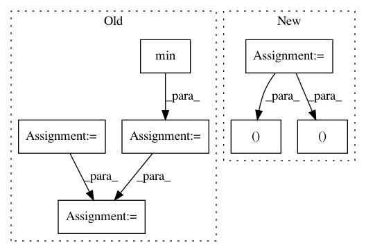

6a98de289a02db6bd0c715affac9242a52c633e3,flow/visualize/time_space_diagram.py,,get_time_space_data,#Any#Any#,76
Before Change
dt = params["sim"].sim_step
// number of simulation steps
max_time = max(max(data[veh_id]["time"]) for veh_id in data.keys())
min_time = min(min(data[veh_id]["time"]) for veh_id in data.keys())
num_steps = int((max_time - min_time)/dt)
// Get the function from switcher dictionary
func = switcher[params["scenario"]]
After Change
func = switcher[params["scenario"]]
// Execute the function
pos, speed = func(data, params, all_time)
return pos, speed, all_time
def _merge(data, params, all_time):
In pattern: SUPERPATTERN
Frequency: 3
Non-data size: 7
Instances
Project Name: flow-project/flow
Commit Name: 6a98de289a02db6bd0c715affac9242a52c633e3
Time: 2019-06-10
Author: akreidieh@gmail.com
File Name: flow/visualize/time_space_diagram.py
Class Name:
Method Name: get_time_space_data
Project Name: rtavenar/tslearn
Commit Name: c68ec2e70731f601f630eb1816c51d7ee4ef0853
Time: 2018-08-10
Author: guillaume.androz@gmail.com
File Name: tslearn/preprocessing.py
Class Name: TimeSeriesScalerMinMax
Method Name: fit_transform
Project Name: nilearn/nilearn
Commit Name: 3daedc17ddab948752f3d6b90e56b177ea77ec42
Time: 2014-02-26
Author: virgile.fritsch@gmail.com
File Name: nilearn/mass_univariate/permuted_least_squares.py
Class Name:
Method Name: permuted_ols